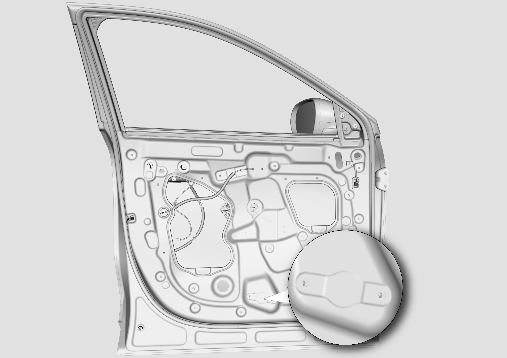
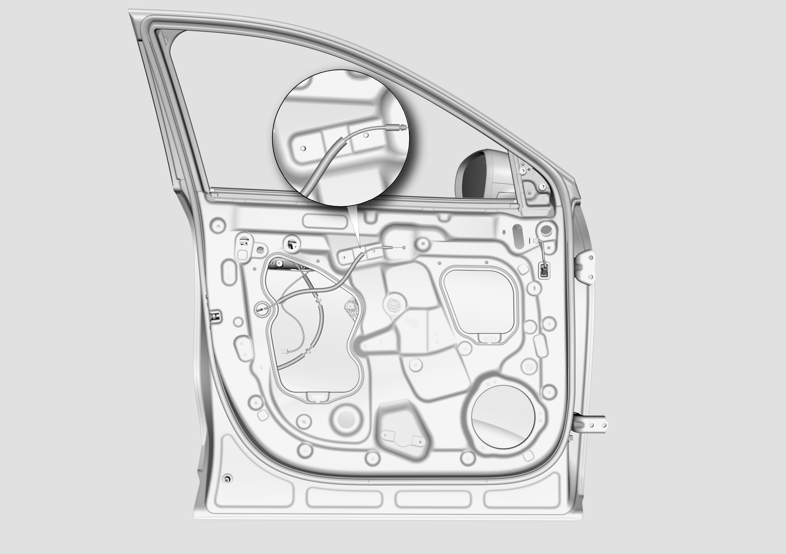
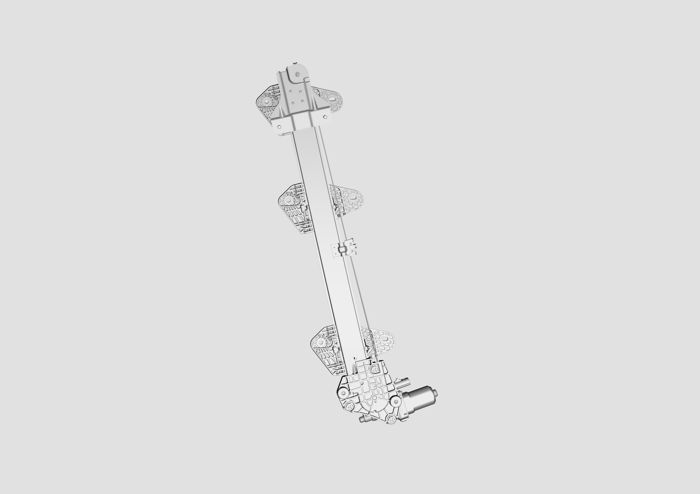
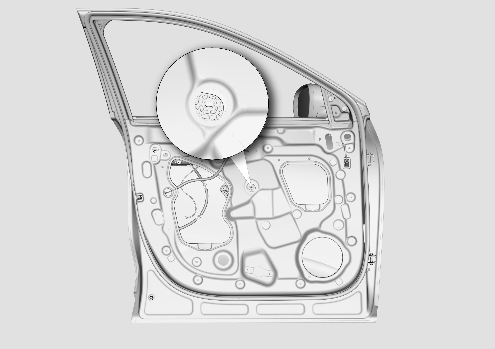

拆卸
这里介绍的是左侧前车门玻璃升降器的拆卸和安装，右侧前车门玻璃升降器的拆卸和安装大体相同。
拆卸前车门玻璃 拆卸与安装前门内饰板
使用10号套筒松掉前车门玻璃升降器电机的两颗固定螺母，见局部放大图位置。安装时锁紧扭矩9±1N·m。

使用10号套筒松掉前车门玻璃升降器的两颗固定螺母，见局部放大图位置。安装时锁紧扭矩9±1N·m。

取出前车门玻璃升降器。

安装
安装大体以拆卸倒序进行，同时注意下列事项。
玻璃升降器安装前后，需保持玻璃升降器滑块上的玻璃安装孔在玻璃安装过孔内，如下图所示；

安装完成后，进行玻璃升降器功能测试。
装配完成后需完成玻璃升降器自学习。